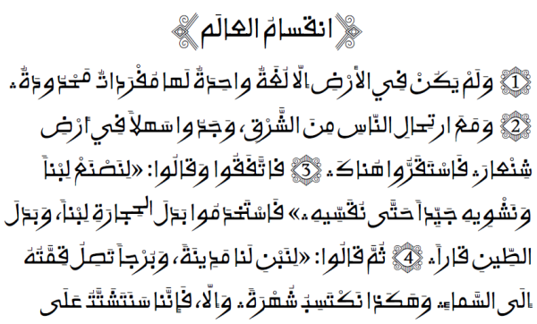

Ruwudu - Design
Ruwudu is the Manga word for "writing". This style of writing is used by the Manga people in Niger, West Africa. This font was initially designed as a lighter or companion version of Alkalami Regular. The design is still very much influenced by the Rubutun Kano style, but was based on samples of footnotes from the market edition manuscripts. These were made with a monoline tool, likely a ball point pen or something similar. The extreme swashes and tails of Alkalami are replaced by more classic and reserved shapes.
One font from this typeface family are included in the Ruwudu release:
- Ruwudu Regular
Type Samples
Type samples showing some of the inventory of glyphs can be found here: Ruwudu Type Sample.
An example of some text is shown below.
Character Set
For a complete list of characters included in this font, see Character Set Support.
Font Features
Alternate glyphs that are available through features are demonstrated in the Features document.